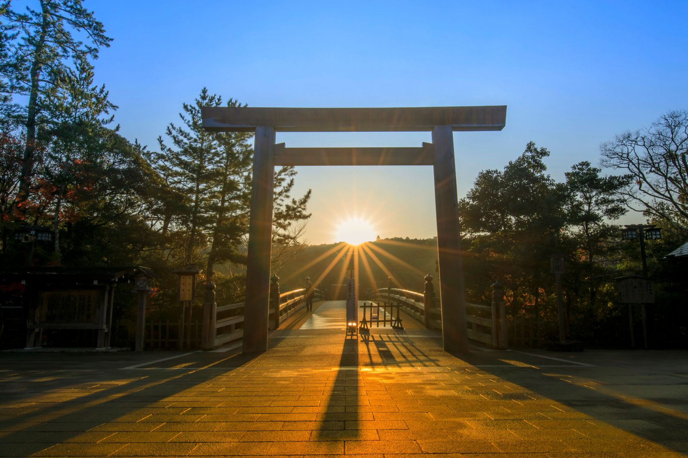
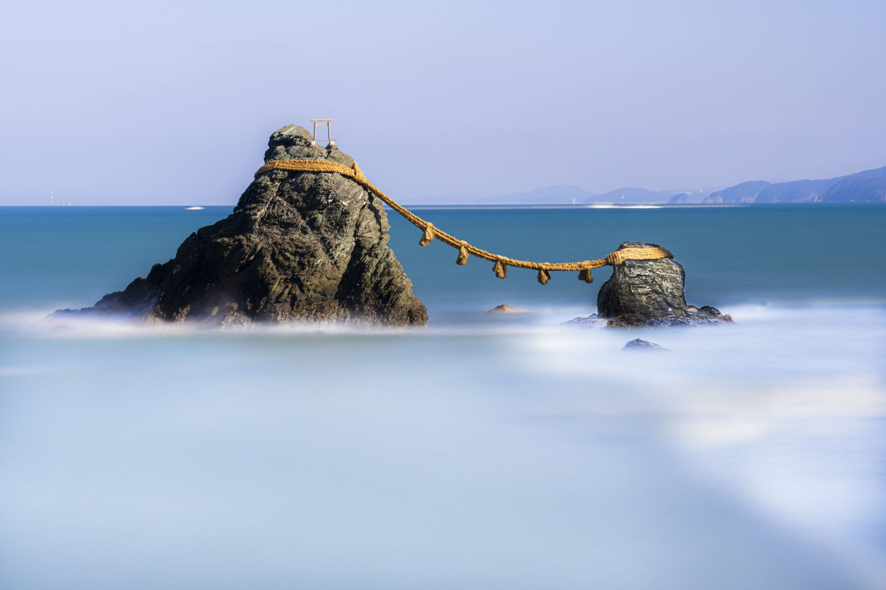
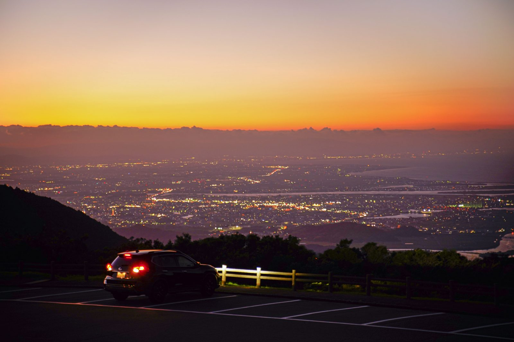
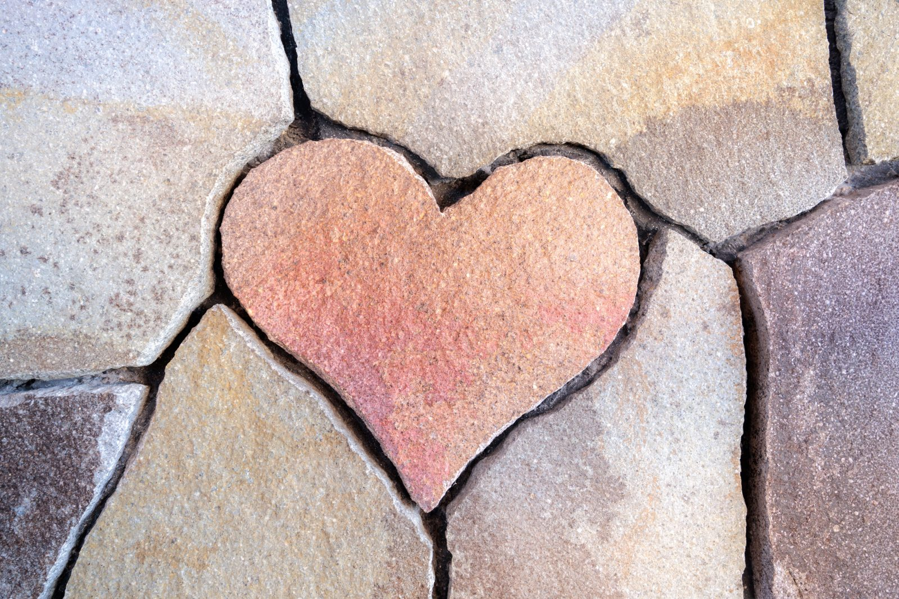

伊勢神宮
内宮に天照大御神を祀り、外宮に豊受大御神を祀る神社。２つの社殿は少し離れた場所にあります。
親しみを込めて「お伊勢さん」「大神宮さん」とも称される。
夫婦岩
二見興玉神社内にある２つの岩。縁結びの象徴として恋愛祈願で参拝する人が多い。夏至には岩の真ん中から日の出が登り、１０月には満月が昇る。
伊勢志摩スカイライン
伊勢志摩スカイラインは伊勢〜鳥羽を結ぶ16.3kmのドライブウェイ。標高555mの朝熊山を通り、山頂付近の展望台には足湯や天空のポストがある。
ハートの石
市営宇治浦田駐車場からおはらい町へ続く地下道の壁には、見ると良縁に恵まれるとされるハート型の石が隠れている。